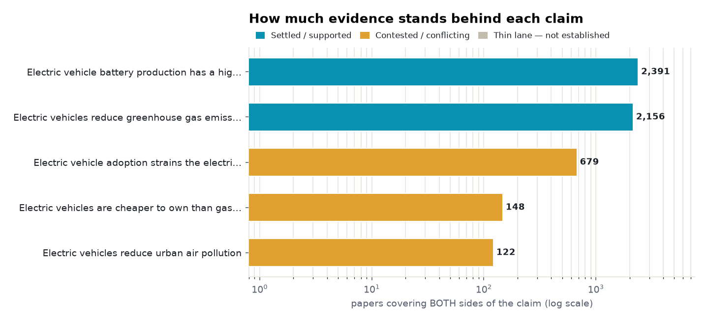
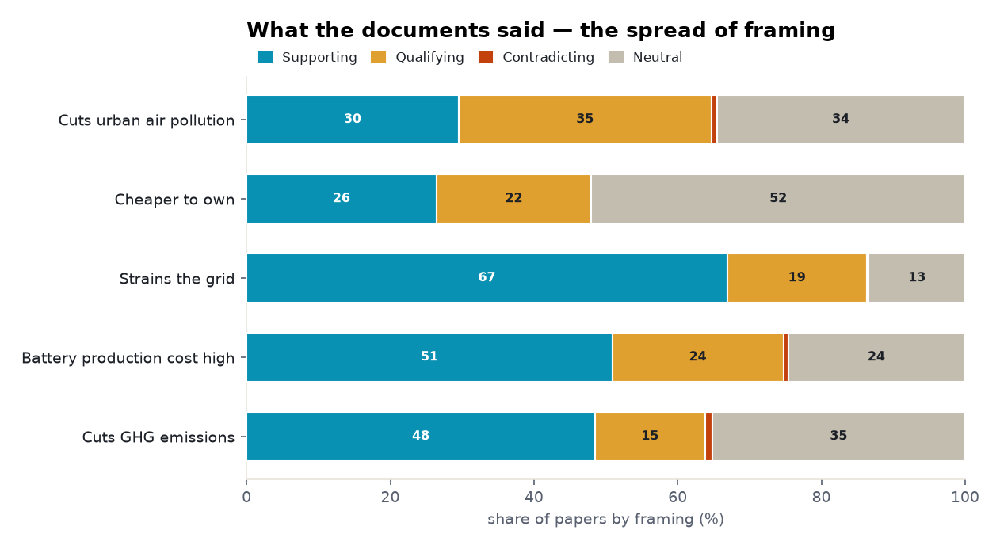
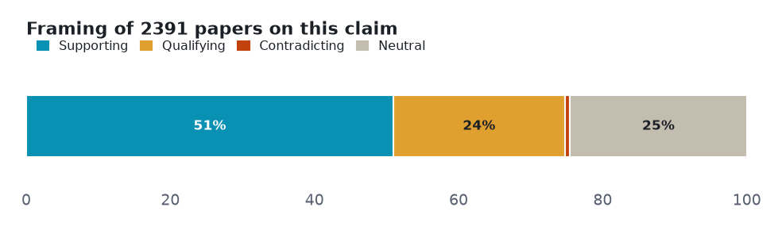
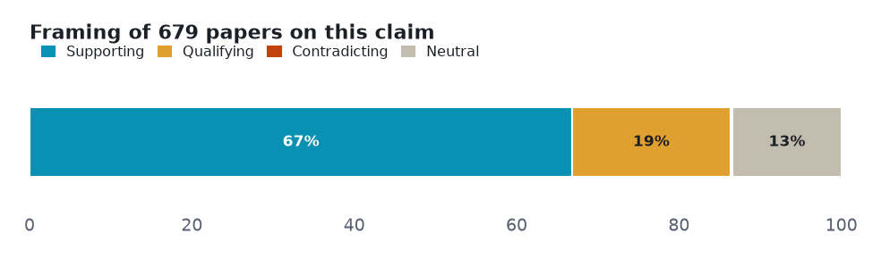
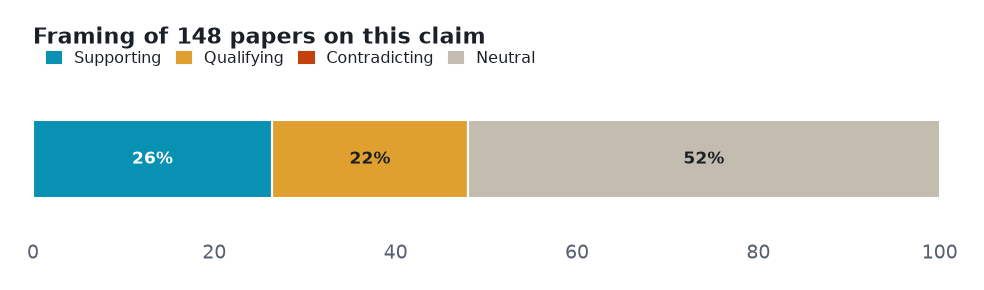
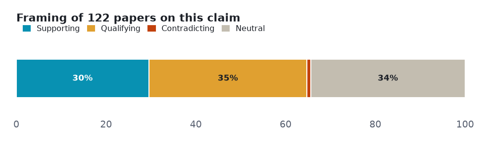

Five claims about electric vehicles tested against both sides of the published literature — 1 that the evidence settles, 4 it leaves genuinely contested.
Every number below is retrieved, not generated. Each angle is a claim run against the research layer on both sides — the papers that affirm it and the papers that push back — so the verdict reflects how much evidence exists and which way it leans, not a single cherry-picked study. Effect sizes are quoted verbatim and verified; thin lanes are reported as inconclusive rather than charted as fact.
| Subject | electric vehicles (climate / energy) |
| Retrieved | 2026-11-06 |
| Coverage | research typed 107% · research 104.2% |
| Source | Prism public API — research.evidence (one call per angle) |
Each section is one claim. The bar shows how the papers framed it — supporting, qualifying (yes, but…), contradicting, or neutral — and the verdict weighs that spread against how deep the evidence runs. A claim can be loudly discussed yet thinly evidenced; the brief says which.
Two cross-cutting views before the angle-by-angle read: how much both-sides evidence each claim has, and how the literature splits on framing.


Mixed framing with no dominant lean. The solid core — supporting outnumbers contradicting 48:1; lifecycle studies confirm the reduction across vehicle types.
Common findings
Verdict: Well supported · both-sides papers: 2,156 · mean stance: +0.31 · contested: 16.3%
Mostly positive framing, with a substantial cautionary minority. A real, well-studied cost — but a partial offset, not a reversal; the landmark LCA puts the battery at ~15% of total e-mobility impact.

Common findings
Verdict: Supported caveat · both-sides papers: 2,391 · mean stance: +0.28 · contested: 24.5%
Overwhelmingly positive framing, which on a citation-weighted corpus can mean consensus or can mean publication bias. The one place framing and read-evidence diverge: 454 papers frame EVs as a grid strain, but the high-tier documents read lean CONTRADICT (6 vs 3) — smart charging keeps voltage within limits even at 90% penetration.

Common findings
Verdict: Conditional · both-sides papers: 679 · mean stance: +0.42 · contested: 19.7%
Mostly positive framing, with a substantial cautionary minority. Conditional — no contradicting papers, but the reads say 'it depends': on segment, mileage, battery replacement and policy.

Common findings
Verdict: Conditional · both-sides papers: 148 · mean stance: +0.19 · contested: 21.6%
Mostly positive framing, with a substantial cautionary minority. The only angle where qualifying (43) outnumbers supporting (36) — benefits depend on the grid mix and can even be regressive.

Common findings
Verdict: Conditional · both-sides papers: 122 · mean stance: +0.12 · contested: 36.1%
Counts and shares measured from the data. Quoted findings verbatim and verified. Every angle formed a real both-sides lane (122-2,391 papers) — no thin lanes here; the story is the verdict, not the depth. Note the mixed valence: 'battery cost' and 'grid strain' are caveat-claims, so a large supporting share there means the caveat is well-evidenced.
Each angle is one call against the research-evidence layer: the claim is posed, both sides of the literature are retrieved, and the framing tally is computed from the returned papers. Thin lanes are named, not inflated — the point of the exercise is to show where the evidence is deep, where it is contested, and where it barely exists.
A Prism worked example. Charts are generated from the retrieved data; every quoted finding is verbatim and verified. data.json holds the underlying numbers.